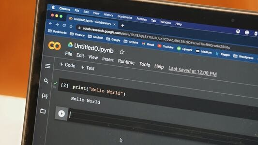
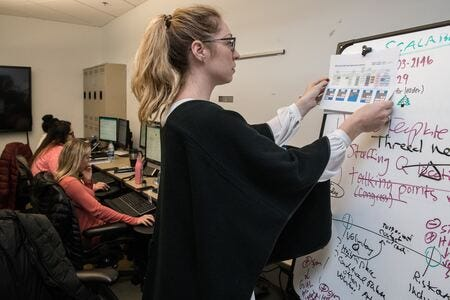
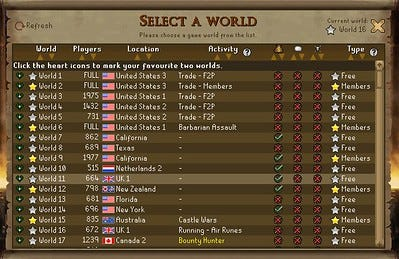
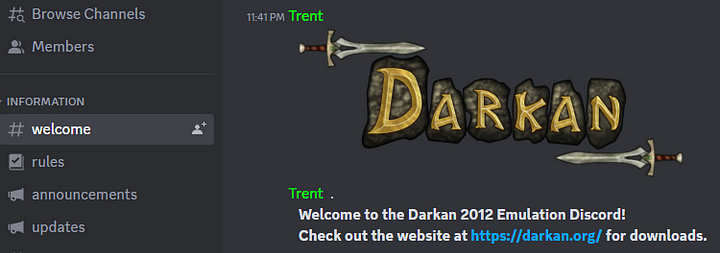
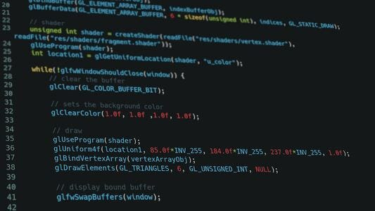
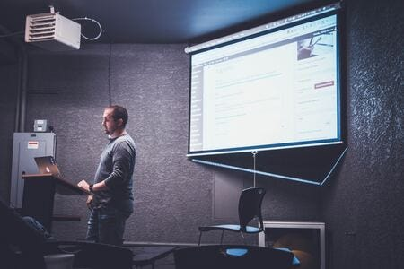
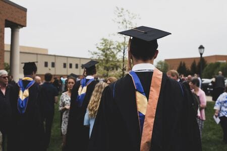
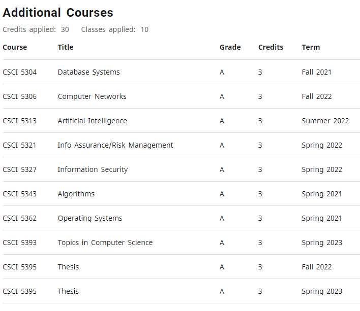

It is always interesting to hear how people learned to code. We each have different paths to the same end and different things that worked for us. You might be able to glean some insight into programming from my story, if you have the desire to read it.
I assume my story is unique. Though it proves natural talent is not the end all to being a programmer. Passion, love of programming and a little bit of luck goes a very long way.
Anywho, here is my story on programming:
Ages 0-19
In my youth I was a bit different than the other kids. I struggled in my ability to socialize. Like the rest of the kids I was given an IQ test. I remember them saying it was a bit low, but I was not given a number. They wanted me to go back a grade but my mother fought instead to put me in advanced placement.
It was a strange thing. In the summers I had extra classes and my family would tell me to write (with a pencil) down math problems and do math with me. It was a wonderful thing and I passed every grade in advanced placement.
Its quite interesting how that paralleled my life later.
Photo by Claude Gabriel
At 13 I discovered piano. There was a girl I wanted to impress, so I thought music was the way for winning over that girl.
I ended up spending 6-8 hours a day practicing technique, reading music theory books and sight reading an extraordinary number of pages of music over the years while going to school.
Music can teach a young kid the result of discipline and dedication for sure. That girl and two others in my schooling put a grudge in my heart against myself. My social skills always proved to be a problem.
Buy by 19 I had become a very good pianist. For the rest of my life I tended to display a natural discipline for things that interested me or were important. I buried away my lack of social skills into discipline.
I always attribute my current discipline to school and music to how I dealt with life in my teenage years.
Ages 19-25
From 19-20 I went to university for Computer Engineering.
Photo by Terren Hurst
I had a very difficult time keeping up with the other students. They seemed so much smarter than me. In my degree plan there was a requirement to take programming fundamentals 3 and that is it.
You can skip 1 and 2, that means if I took 1 & 2 I would have to pay extra and it wouldn't count as credits. I thought, "Oh that's fine ill take programming fundamentals 3". Can't be hard right? Its just the fundamentals....
Wrong! They were talking about algorithms & data structures. I didn't even know how variables worked. I failed the class and concluded, "I am not smart enough to learn programming."
I ended up failing 2 or 3 classes during this time-physics 1, programming 3 & Computer Engineering 2. But I retook those and did complete Physics 2, Calculus 4 & Chemistry 2, which was nice.
My GPA was 2.3, I was struggling so I was thinking of dropping out. At the time I lived on scholarships & grants which of course depended on that GPA...
Well, I lost them.
I was constantly out of money. Often I would not have food to eat so I ended up getting lanky skinny. I ended up getting a summer job as Helpdesk at my university.
On the way to work, toward the end of Summer, I got into a terrible truck accident. Essentially I hit my head in the accident and since then experienced a loss of intelligence, an inability to imagine words from text, blackouts and severe headaches.
I went to a hospital months later to get checked out. My family was gathered around me and I had no idea what was happening.
"He will never be the same, he likely will not make a recovery, say good bye to your son" At these times it was very difficult to let go of school and my memory is quite a blur.
Photo by Hector Emilio Gonzalez
But I lost my intellect and ability to recognize reality. For a while life was a haze of days put together by the next. Obviously I dropped out.
For 5 years I struggled just to get to the next day. I took odd jobs, worked in my fathers construction company, fast food, etc. etc.
Ages 25-31
In that time I discovered religion. Though it is not for everyone-it saved my life. My belief in Christ is why I survived that time period. I became a Christian.
Belief in a higher power was both a cope and tonic for mental health. Slowly after 5 years I was recovering from what doctors called a severe concussion. Though I suspect it was much more than that.
My family saw my struggle and said "why not go back to university? We will pay for it". I responded with, "Guys, I have a hard time just reading a page on a book. How the hell will I survive in university?"
But of course they convinced me.
I quit my job at McDonalds and took Art Appreciation 1 as my first class. Just one class, well see how it goes. I chose business administration as my major as I thought it would be an easy associates degree.
On the bus to class, I would try to read a variety of books, mostly "learning to learn", John Maxwell's leadership books & the Bible. I started off with a goal of reading 1 page every day.
I did this for 2 years while getting an associates and slowly my intellect recovered. By the end of my associates I was reading 5 pages per day and getting As and Bs as a part-time student.
Photo by Emmanuel Offei
I remember walking on stage for that associates degree. For the average person, that is nothing. An associates doesn't mean much. But for me it was proof that maybe just maybe I can succeed at school.
I continued reading every day on the bus and started going to the gym to weight lift by recommendation of a doctor. In my bachelors program, there was a requirement to take programming fundamentals 1 & 2.
I thought it was odd as a requirement for business. I absolutely dreaded the concept of a programming class, as I believed, "I am not smart like the other students". But, I had to do what needed to be done.
I took programming fundamentals 1 and decided I would try to "pass".
Introduced to programming
This was my first introduction to programming.
Photo by Zach Graves
The teacher spoke to us as if we knew nothing about Computer Science or programming. We started with the basics, "what is software, why do we need code for it?", "What is a programming language", "What is a variable, condition & loop", things like that.
At the time it was really nice to finally have something I could actually understand. Like, really nice. Really really nice. So nice in fact, when going home from class I decided to read books on programming on my own.
I started to practice programming.
I actually "got something" that I thought was impossible. In the first two weeks we had quizzes and simple programming exercises to turn in. I got a 100 on them and was thoroughly proud of myself.
Photo by CDC
My neighboring students saw my grades and asked if I could tutor them on the programming exercises. They just wanted to "pass" and not really learn programming but they could use the extra help.
So, after every class I would explain the basics of programming as we did in class on a whiteboard. I tutored 2 people after every lecture for the entire semester and studied on my own when I got home.
Programming fundamentals 2
I was very nervous about programming fundamentals 2. I got perfect scores in fundamentals 1. But what about 2?
Will it be too hard? Well, I found myself ahead of the rest of the students, because I was studying on my own. I was afraid to fail and struggle like I did when I was younger.
Thankfully the exact same thing happened in fundamentals 2 as the first class. I got perfect scores and my neighboring students asked for tutoring.
I tutored in the same fashion as the first class. By the way, at the time I was 26 for these two semesters. I wondered if I was too old but decided to put that aside and not worry about it. There were other requirements for my degree, including cloud, computer networks and databases.

Photo by Sigmund
I guess you need these things as a business major, I don't know. I took them and realized I actually love Computer Science. For some reason, people like when I talk about it, I love talking about it and I love coding.
My awesome teacher
During this time, I had one teacher for 5 semesters in a row. He said he enjoyed my enthusiasm, but I need something a little more. He told me I needed to work with other developers.
"Find an open-source project, Jesse. You need it. To become very strong you must work with others." Arabic is his first language, so imagine a middle eastern accent with that.
I searched for an open-source project yet could not find one. On the side I was re-programming a Runescape clone independently. It was always my favorite video game.
I spent 6+ hours a day programming the Runescape clone while doing homework and taking classes. So naturally one day I found a Runescape remake community.
Photo by Daniel Livingstone
The source for their remake was closed-source and only trusted developers were allowed access to it. I hung out with the developers of the project over Discord voice and showed my clone.
They helped me create my own for many months. They answered questions about networking, Java and programming the game assets. One day, the players of their remake asked if their developers could pump out more content. "It is rather slow". Long story short they said they would need new developers and there is no one they could trust.
I joined a coding project
"What about Jesse?" one of the players asked. The guy has been working on a Runescape clone for 8 months. He works hard and seems honest.
Photo of Darkan's Discord
"@Jesse, what do you think?" that same player asked. I said I would love to but the project is closed-source and that is that. The owner sent me a direct message and asked, "Can I trust you with the code?"
I said, "I would do my best not to push or share it to anyone outside the dev team." I joined the project and committed many monolithic updates from quests to engine changes(many of which were not approved).
As I reached the end of my bachelors, I was extremely happy about my recovery from the truck accident. I was smarter and wiser after the accident than I was before. But it took more than half a decade to recover.
I was reading 10-20 pages a day of very difficult non-fiction books. Then practicing programming with Darkan.org, class assignments & self-imposed learning projects.
Often after my coding sessions I was actually more energized, more intellectual and generally happier than right before the session.
Masters in Computer Science
At this point I debated about whether or not to go to graduate school. My GPA was high enough. I had straight As for my bachelors.
Hmm...
Maybe I should do social work? I am not smart enough for Computer Science. I can do social work. They accept business credits to the program. Many people in my life said software engineering was probably better for me.
Photo by LinkedIn Sales Solutions
What convinced me was when my rather successful uncle told me in business I would need to have a natural talent for public speaking and leading organizations to truly be successful. You can practice and train, but nothing beats natural talent in business.
If you dedicate yourself, mijo (he is Hispanic), "maybe you can actually do it. Programming is one of those things that effort rewards, more than something like business (politics) or social work. Most social workers I know are unhappy due to a lack of money too".
Those conversations convinced me and I applied for a graduate program at my same school.
I applied
Well, yea I applied. And waited... I waited two months and received a denial.
This was my last semester in the bachelors program. Fortunately my teacher for my last class was also the director. He was the director who gave me the denial.
At the end of the lecture of our class I asked if we could chat privately. I asked why he denied me and if there is anything I could do to get in?
"Jesse, other students with bachelor's in Computer Science are failing this program. Because of this we also created a 2 year work experience requirement in software engineering or tech. You only have a few Computer Science courses.
I am sorry but people in your situation just fail too much." I went home, cried a bit and accepted my fate.
However my mother, being the rockstar she is, fought for my admission. She argued about chances and how last year the experience requirement was not there. She called several people, including the director.
To this day I don't know what was said or done. But I got an acceptance letter a week later, 1 month before the start of the next Master's program year.
They accepted me into the program on the condition that I take 4 extra Computer Science classes to "catch up" to the other students. I got very serious at that point.
Perhaps if I prepare....
"Perhaps if I just prepare, maybe I can make it."
Photo by Krishna Pandey
That old teenage discipline came out and I began writing code 6+ hours a day while doing these 4 extra programming classes, part-time, two per semester.
Each class was difficult enough for the majority of the students to do this and take only 2 classes. I switched languages & frameworks according to my class and got the syllabus ahead of time to study.
I had to take an introduction to Machine Learning course. 3/4s of the students could not complete the homework. And I never knew!
I actually put a butt load of effort learning and completing coding assignments thoroughly. This while the other students did not! There were many classes like this, where 1/2 the students fail or so and I was ignorant of the curve.
I am in the program
Then after the 4 filler classes I was officially in the program.
Photo by Kenny Eliason
The total number of classes I needed to take was 10 courses at 3 credit hours each to pass the program. I had to do it within 5 years from start to finish.
Eventually, during the program I had to take classes with that same director. For some reason, he did not seem to like me.
He also seemed to expect me to fail. I felt it in our conversations during his office hours- he seemed a bit dismissive.
During this time we had an assignment involving a mini-internet of 100 tiny virtual Linux instances. They are all connected in a typical pattern like in real life.
The director wanted us to create a worm in Python for extra credit if we could find a way to do it, using a known exploit. I wrote a worm for it from scratch, made a YouTube video of the thing and turned it in. I did things like this over and over again, hard assignments where I was the only one finishing assignments.
I had finally won his respect and turned around the relationship from believing I would fail to respecting me as a programmer and student.
Toward the end of the program I had a choice. Either I create a two semester thesis or I take two regular classes. The director recommended to take thesis.
I wondered which was better or easier. He convinced me to do thesis and pick 3 professors who I want to publish research papers with.
I spoke to other students who did thesis in the past and came up with a top 3 professors based on their experiences. The first was, of course, the director. And, the other an awesome new professor.
Our goal was to publish 3 papers and write a 50 page thesis. Well, we published 6 papers, got a grant for one of them. After 8 months we finished the thesis on time.
You can see my Google Scholar with all my research papers there. Throughout the program I was top 1 or 2 students for grades. I did every coding assignment with gusto, took no shortcuts and 3 years later it was over..
Photo by Charles DeLoye
I graduated with a masters, taking fourteen 3 credit hour classes for the degree. Take a look:
It was very difficult, I got all As at above a 95 and graduated top of my class.
Present
Today I am a recent grad. In late 2023 my focus I am mostly doing LeetCode and interviewing. I am 3/4 done with the Grind169. I have done most of them.
I may or may not apply for a doctorate. I am trying to eventually find work as a Software Engineer.
I decided to write about Computer Science, because well, it is extremely fun. I often find myself writing for 3-4 hours and wonder where the time went!